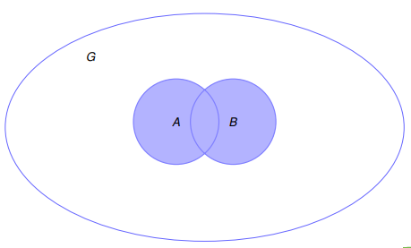
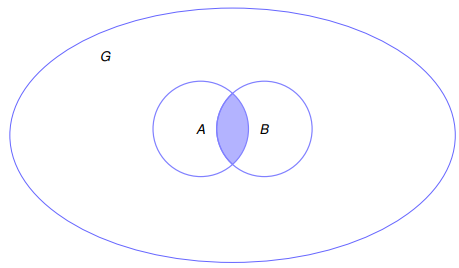
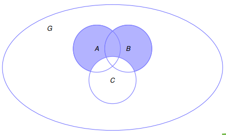

Kapitel 1: Zahlenmengen und Mengenoperatoren
1.1 Zahlenmengen
1.1.1 Definition
Unter einer Menge M verstehen wir eine Zusammenfassung von unterscheidbaren Objekten zu einem Ganzen. Die Objekte,die in der Menge M enthalten sind, nenntman die Elemente der Menge M.
Schreibweise:
a ∈ M: a ist ein Element der Menge M.a ∉ M: a ist kein Element der Menge M.M = {1,3,5,7}- mengen kann man beschreiben indem man ihre Elemente auflistet- geeignet für überschaubar große Mengen
M = {x ∈ N | x ist ungerade und x ≤ 7}- oder man gibt die eigenschaften an die für die Elemente gelten- geeignet für große Mengen und unendlich große Mengen
M = {1,2,3,4,...}- möglich, aber nur wenn es absolut eindeutig ist- Reinfolge und Wiederholungen sind nicht schlimm -> "unterscheidbar"
M = {1,2,3} = {3,1,2} = {1,1,2,3,3}
- leere Menge
∅: Menge ohne Elemente∅ = {}
1.1.4 Natürliche Zahlen
ℕ = {1,2,3,4,...}- Alle ganzen Zahlen > 0
0 ∉ ℕ- ℕ~0~ ist die Vereinigung ℕ und {0}
ℕ~0~ = ℕ ∪ {0}
- Für alle Zahlen
k > 0gilt:ℕ~≥k~ = {x ∈ ℕ | x ≥ k}- z. B.
ℕ~≥3~ = {3,4,5,...}
1.1.6 Ganze Zahlen
ℤ = {...,-3,-2,-1,0,1,2,3,...}
1.1.7 Rationale Zahlen
ℚa/bmita ∈ ℤundb ∈ ℕ- Brüche
- Wenn kürzbar/"teilerfremd", werden sie gekürzt, das ist dann keine andere Zahl nur eine andere Schreibweise
1.1.8 Irrationale Zahlen
𝕀: Die Menge der Zahlen die nicht als Bruch dargestellt werden kann- z. B.: Pi π, Eulersche Zahl e
- unendlich viele Nachkommastellen, aber nicht periodisch
1.1.9 Reele Zahlen
- Die Menge aller rationalen und irrationalen Zahlen
- Vereinigung
ℝ = ℚ ∪ 𝕀
1.1.9.1 Komplexe Zahlen
ℂ- Imaginäre Zahlen
- Zum Beispiel, die Quadratwurzel aus negativen Zahlen
1.2 Mengenoperatoren
1.2.1.1 Vereinigungsmenge
A ∪ B: Menge aller Elemente die in A oder in B sind- die Elemente dürfen auch in beiden Mengen sein
1.2.1.2 Schnittmenge
A ∩ B: Menge aller Elemente die in A und in B sind
1.2.1.3 Teilmenge
A ⊆ B: Jedes Element von A ist auch ein Element von B- gelesen als "A ist Teilmenge von B"
- B ist eine Obermenge von A, wenn
A ⊆ B A ⊂ B- A ist eine echte Teilmenge von B, wennA ⊆ BundA ≠ B
1.2.1.4 Differenzmenge
A \ B: Menge aller Elemente die in A sind, aber nicht in B- gelesen als "A ohne B"
1.2.1.5 Komplement
A^c = G \ A: Menge aller Elemente die nicht in A sind- bezogen auf eine Grundmenge (bzw. Obermenge) G
1.2.1.6 Anmerkung
- Für jede Menge M gilt:
∅ ⊆ MundM ⊆ M - Zwei Mengen sind gleich, wenn sie die gleichen Elemente enthalten
A = Bgenau dann, wennA ⊆ BundB ⊆ Agilt
1.2.2 Darstellung durch Venn-Diagramme
- Venn-Diagramme sind grafische Darstellungen von Mengen und deren Beziehungen zueinander
Abbildung 1: Venn-Diagramm für Vereinigungsmenge (A ∪ B)  Abbildung 2: Venn-Diagramm für Schnittmenge (A ∩ B)  Abbildung 3: Venn-Diagramm für Differenzmenge (A ∪ B \ C) 